광학기사 (2016-05-08 기출문제)
1과목: 기하광학 및 광학기기
1. 다음 수차 중 bending에 의한 수차교정이 가능한 것들로만 짝지어진 것은?
- Spherical aberration, Coma
- Oblique astigmatism, Distortion
- Curvature of field, Distortion
- Spherical aberration, Chromatic aberration
(정답률: 75%)

2. 다음 그림은 어떤 수차를 설명하기 위한 것인가?
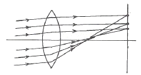
- Coma
- Distortion
- Spherical aberration
- Oblique astigmatism
(정답률: 77%)
3. 곡률반경이 큰 볼록 구면경의 곡률반경 r을 그림과 같은 장치로 측정할 때 볼록거울의 정점으로부터 물체슬릿까지의 거리가 D, 슬릿으로부터 나온 광속의 볼록거울 접촉면에서의 폭을 ℓ, 슬릿이 놓여 있는 평면상에서의 광속의 폭이 L일 때 곡률반경 r은?
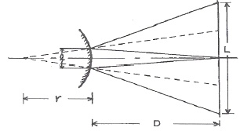
- 2Dℓ/(L-2ℓ)
- 2Dℓ/(L+2ℓ)
- Dℓ/(L-2ℓ)
- Dℓ/(L+2ℓ)
(정답률: 53%)
4. 공기중에서 파장이 600nm인 빛이 굴절률 1.5인 매질 내로 입사하였을 때 매질 내에서의 파장(λ)과 진동수(f)의 값은?
- λ=400nm, f=5×1014Hz
- λ=400nm, f=7.5×1014Hz
- λ=90nm, f=5×14Hz
- λ=900nm, f=7.5×14Hz
(정답률: 82%)
5. 반사경을 이용한 광학계의 장점에 관한 내용으로 틀린 것은?
- 가공성이 좋다.
- 무게를 줄일 수 있다.
- f-수를 크게 할 수 있다.
- 색수차를 제거할 수 있다.
(정답률: 78%)
6. 밝기 9의 밝은 선과 밝기 1의 어두운 선이 주기적으로 반복되는 sinusoidal pattern이 있다. 이 pattern을 광학계로 1/2로 축소하여 결상하였을 때, 가장 밝은 부분의 밝기는 12, 가장 어두운 부분의 밝기는 8이 되었다. 이 광학계의 MTF는 얼마인가?
- 0.25
- 0.5
- 0.75
- 2
(정답률: 69%)
7. 얇은 렌즈에 대한 초점거리 공식을 사용한 굴절률이 1.52, 곡률반경이 25mm인 평볼록렌즈의 초점길이는 약 몇 cm 인가?
- 4.8
- 9.6
- 14.4
- 19.2
(정답률: 67%)
8. 유효초점거리 100mm, 입사동의 직경이 20mm인 무수차 원형개구 광학계로 무한대에 있는 물체를 결상하였다. 빛의 파장이 0.5㎛일 때, 이 광학계가 분해할 수 있는 최대 공간주파수(cutoff frequency)는 몇 cycles/mm인가?
- 200
- 400
- 500
- 1000
(정답률: 65%)
9. 1mm당 10개의 줄무늬가 있는 물체에 대한 두 광학계의 MTF 값이 각각 0.7과 0.8이다. 두 광학계를 동시에 사용할 때, 전체 MTF값은?
- 0.1
- 0.56
- 0.7
- 56
(정답률: 18%)
10. 꼭지각이 30°인 프리즘의 굴절률은 파란색 광선에 대해서 1.65이고, 빨간색 광선에 대해서 1.61이라면 두 파장 범위 내에서 각분산(angular dispersion)은?
- 1.31°
- 2.62°
- 3.38°
- 4.18°
(정답률: 82%)
11. 그림과 같이 원래의 상이 찌그러진 상으로 나타내는 이유는 어떤 현상 때문인가?
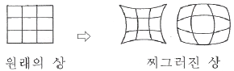
- 코마
- 구면수차
- 왜곡수차
- 비점수차
(정답률: 85%)
12. 광학 유리에 대하여 가시광 영역에서 다음 내용 중 옳은 것끼리 짝지어진 것은?
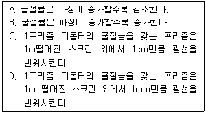
- A, C
- A, D
- B, C
- B, D
(정답률: 67%)
13. 그림과 같이 포로프리즘(Porro prism)을 2장 겹쳐 놓고서 물체의 위치에 R을 놓았다. R은 어떻게 보이는가?
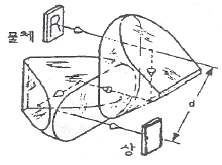
- R
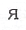
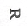
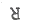
(정답률: 50%)
14. 볼록렌즈 앞 50cm되는 곳에 점광원이 있다. 이때의 상이 맺히는 거리는 렌즈에 평행광선이 입사되었을 때 상거리의 5배가 되었다면 이 렌즈의 초점거리는?
- 10cm
- 20cm
- 30cm
- 40cm
(정답률: 39%)
15. 초점거리가 10cm인 렌즈의 오른쪽 5cm떨어진 지점에 직경 2cm인 구경 조리개가 있다. 입사동의 크기는 몇 cm 인가?
- 1
- 2
- 4
- 8
(정답률: 75%)
16. He-Ne 레이저에서 발생한 평행광선이 광축을 따라서 단일 볼록렌즈에 의해 접속될 때, 초점에 한 점으로 모이지 않고 크기를 갖는 원으로 모이는 것은 무슨 수차 때문인가?
- 구면수차
- 코마수차
- 왜곡수차
- 상면만곡수차
(정답률: 88%)
17. 천체망원경 대물렌즈의 초점거리가 40cm, f수가 5이다. 평행한 광선이 들어오고 바깥쪽 눈동자의 직경이 2cm일 때 접안렌즈의 초점거리와 망원경의 배율을 구하면?
- 2cm, 1배
- 5cm, 2배
- 8cm, 3배
- 10cm, 4배
(정답률: 56%)
18. 핀홀 카메라의 왼쪽에 물체가 놓여 있고 이 물체로부터 오른쪽으로 3m 떨어진 곳에 물체 크기의 1/5이 되는 상이 맺혔다. 핀홀과 상까지의 거리는 얼마인가?
- 15cm
- 30cm
- 50cm
- 60cm
(정답률: 78%)
19. 다음 중 구경 조리개(Aperture stop)의 크기에 가장 크게 의존하는 수차는?
- 구면수차
- 코마수차
- 만곡수차
- 왜곡수차
(정답률: 58%)
20. 두꺼운 양면 볼록렌즈의 곡률반경이 각각 8cm, -8cm이고 가운데 두께가 1cm, 굴절률이 1.6일 때 이 렌즈계의 초점거리는 약 얼마인가?
- 3.3cm
- 4.2cm
- 5.2cm
- 6.8cm
(정답률: 43%)
2과목: 파동광학
21. 영(Young)의 이중 슬릿 실험에서 얻어지는 간섭무늬의 간격은 슬릿 간격과 슬릿과 스크린 사이의 거리, 그리고 사용하는 빛의 파장에 의해서 결정된다. 다음 중 간섭무늬의 간격을 줄일 수 있는 경우는?
- 슬릿 간격을 넓힌다.
- 슬릿과 스크린 사이의 거리를 넓힌다.
- 파장이 큰 빛을 사용한다.
- 간격을 줄일 수 없다.
(정답률: 71%)
22. 핫 미러(hot mirror)에 대한 설명으로 옳은 것은?
- 어떤 특정한 파장을 반사시키고, 나머지 파장들은 투과시킨다.
- 적외선을 반사시키고, 가시광선을 투과시킨다.
- 적외선을 투과시키고, 가시광선을 반사시킨다.
- 스펙트럼에서 파장의 일부 영역만 차단시킨다.
(정답률: 59%)
23. 그림은 광섬유 측단면을 나타낸 것이다. 허용각(acceptance angle) α를 표현한 것으로 옳은 것은? (단, 코어와 클래딩의 굴절률은 각각 n1, n2 이며, 공기의 굴절률 n0는 1이다.)
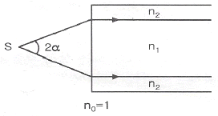
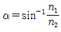
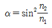
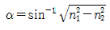
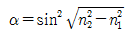
(정답률: 62%)
24. 굴절률이 n인 매질 내에서 빛이 진행하는 속도는? (단, 진공 중의 빛의 속도는 c이다.)
- cㆍn
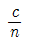
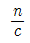
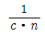
(정답률: 74%)
25. 폭이 1인 1차원 사각함수(rectangular function)에 대한 푸리에(Fourier) 변환 함수는? (단, fx는 공간주파수(spatial frequency)이다.)
- exp(-πf2x)
- δ(fx)
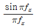
- cos(πfx)
(정답률: 54%)
26. 광학 부품 중 공간주파수 분석기의 역할을 하는 대표적인 것은?
- 렌즈
- 레이저
- 프리즘
- 평면거울
(정답률: 63%)
27. 방해석에게 광축에 수직인 방향으로 진행하는 빛에 대한 설명으로 옳은 것은?
- 이상광선과 정상광선의 구별이 없다.
- 이상광선이 정상광선보다 느리게 진행한다.
- 이상광선이 정상광선보다 빠르게 진행한다.
- 이상광선과 정상광선이 같은 속도로 진행한다.
(정답률: 50%)
28. 초점거리 20cm인 볼록렌즈의 한 초평면 상에 폭 1㎛의 슬릿을 위치시킨 후, 500nm 파장의 광을 슬릿에 수직 입사하여 렌즈의 반대편 초평면 상에 나타나는 회절무늬를 관찰한다. 1차 어두운 회절무늬의 위치는 무늬의 중심에서 얼마의 거리에 있는가?
- 1cm
- 5cm
- 10cm
- 20cm
(정답률: 48%)
29. Na(소디움, sodium) 이중선(λ1=5895.9°Å, λ2=5890.0Å)을 삼차 회절광에서 분리시키기 위하여서는 격자의 총 격자선이 몇 줄이어야 되는가?
- 333
- 500
- 999
- 1964
(정답률: 69%)
30. 굴절률이 n1인 기판 위에 두께가 λ/4인 1층 박막을 증착하여 무반사막을 만들려고 한다. 증착물질의 굴절률을 nT라고 할 때 n1값이 얼마이어야 무반사 조건이 만족되겠는가?
- n1=√nT
- n1=3√nT
- n1=nT2
- n1=nT3
(정답률: 50%)
31. 광통신에 주로 사용되는 C-band의 파장 영역은?
- 800~900nm
- 1260~1360nm
- 1365~1525nm
- 1530~1562nm
(정답률: 59%)
32. 굴절률 n1=1.66인 core와 n2=1.52인 cladding으로 이루어진 직선 광섬유에 대해 최대입사 허용각(acceptance angle)θ1은 얼마인가?
- 66°
- 55°
- 24°
- 42°
(정답률: 60%)
33. 두 개의 론키 격자(Ronchi rulings)를 겹치면 무아레 무늬를 관찰할 수 있다. 이 무늬에 대한 설명으로 틀린 것은?
- 백색광에서도 무늬를 볼 수 있다.
- 격자면의 변형을 측정할 수 있다.
- 유리의 공간적 굴절률 변화율을 알 수 있다.
- 격자를 회전시키면 무늬 간격이 변화한다.
(정답률: 57%)
34. 굴절률 ni인 매질에서 굴절률 nt(＜ni)인 매질로 빛이 입사할 때 전반사가 일어나는 임계각 θc에 대한 표현 중 옳은 것은?
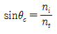
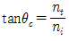
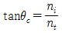
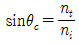
(정답률: 53%)
35. 다음 중 홀로그램의 특성이 아닌 것은?
- 기준파의 위치가 변하면 상의 크기는 변하지 않으나, 상의 위치는 변화한다.
- 홀로그램을 작은 조각으로 잘라내어도, 각 조각은 물체의 온전한 상을 모두 포함한다.
- 제작된 홀로그램을 밀착 인화(contact printing)하면 동일한 성질의 또 다른 홀로그램을 만들 수 있다.
- 기록광 파장의 2배 파장을 갖는 광으로 홀로그램을 재생할 때, 재생된 상의 횡배율이 2배이면 종배율도 2배이다.
(정답률: 40%)
36. 다음 맥스웰(Maxwell) 방정식 중 패러데이(Faraday) 법칙과 관련된 것은?
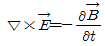
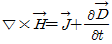
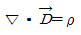
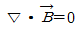
(정답률: 78%)
37. 그림과 같이 평면유리 위에 plano-convex lens를 올려놓고 위에서 λ의 파장을 갖는 광을 쬐여 준다. 이때 형성되는 간섭무늬를 Nextons ring이라 한다. 간섭무늬의 첫 번째 어두운 부분까지의 반경이 1mm라면 사용된 광원의 파장은? (단, plano-convex lens의 곡률반경은 4m이다.)
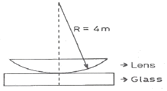
- 250nm
- 450nm
- 500nm
- 550nm
(정답률: 35%)
38. 파장이 1.5㎛이고 빔의 직경이 1mm인 가우스 광속을 렌즈에 입사시켜 지름이 10㎛인 광섬유 코어에 집속시키려고 하면, 필요한 렌즈의 초점거리는 약 몇 mm인가?
- 4.8
- 5.2
- 5.7
- 6.3
(정답률: 19%)
39. 다음 중 광섬유의 손실 원인이 아닌 것은?
- 레일리 산란
- OH 이온들의 진동에 의한 흡수
- 미세 휨 손실
- 실리카에 의한 흡수
(정답률: 56%)
40. 파장 500nm의 단색광을 이용하는 마이캘슨 간섭계가 있다. 간섭계의 한 쪽 팔에 굴절률이 1.5이고 두께가 40㎛인 유리판을 삽입할 때, 간섭무늬의 이동(displacement) 개수는 몇 개인가?
- 20개
- 40개
- 80개
- 120개
(정답률: 63%)
3과목: 광학계측과 광학평가
41. 다음 중 조리개를 중심으로 같은 형태의 렌즈가 서로 마주보고 있는 (대칭)렌즈계는?
- Double Gauss
- Petzval lens
- Cooke Triplet
- Tessar
(정답률: 71%)
42. 프리즘의 종류를 사용하는 기능으로 분류할 때 포함되지 않는 것은?
- 편광 프리즘
- 반사 프리즘
- 분산 프리즘
- 위상 프리즘
(정답률: 56%)
43. 카메라의 렌즈에는 무반사 코팅을 하여 피사체로부터 오는 빛의 반사를 막는다. 렌즈의 굴절률을 1.5, 코팅 재료의 굴절률을 1.3이라 하고, 가시광선의 중간 파장인 550nm에 대해 수직입사 시 무반사 코팅을 하고자 하면 코팅 막의 최소 두께는 약 얼마인가?
- 92nm
- 106nm
- 184nm
- 212nm
(정답률: 70%)
44. 다음 중 레이저가 결정에 입사된 후 파장이 변화하여 산란되는 현상을 나타내는 것은?
- 라만(Raman) 효과
- 레일리(Rayleigh) 효과
- 뫼스바우어(Mossbauer) 효과
- 제만(Zeeman) 효과
(정답률: 65%)
45. 그림을 임상현미경용 대물렌즈이다. 그림에 대한 설명 중 틀린 것은?
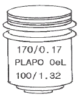
- 170은 경통 길이이다.
- PL은 Plane lens를 뜻한다.
- 100은 100X 배율이다.
- 1.32는 초점거리이다.
(정답률: 75%)
46. 광학 유리의 중요한 특징 중 하나는 파장에 따른 빛의 투과성(Transmittance)이다. CO2레이저의 경우 파장이 10.6㎛로 보편적으로 사용되는 광학유리는 사용할 수 없다. 다음 중 CO2레이저의 파장영역에서 사용 가능한 광학물질은?
- 실리콘
- 사파이어
- 실리카
- 셀렌화 아연(ZnSe)
(정답률: 54%)
47. 최근 광통신분야에 널리 사용되고 있는 광섬유의 장점을 전기도체와 비교하여 설명한 것 중 틀린 것은?
- 무게가 가볍고 비용이 저렴하다.
- 좁은 대역폭을 가지고 있다.
- 전기적 간섭을 일으키지 않는다.
- 많은 양의 신호운반이 가능하다.
(정답률: 42%)
48. 다음 중 바늘구멍 사진기에 대한 설명으로 옳은 것은?
- 초점 심도가 깊다.
- 시야가 좁다.
- 상이 왜곡된다.
- 노출 시간이 짧다.
(정답률: 50%)
49. 디지털 표시장치나 디스플레이 등에 많이 사용되는 액정(liquid crystal)의 광학 특성에 대한 설명으로 옳은 것은?
- 액정의 굴절률 차이를 이용한다.
- 액정 주위에 있는 편광기를 돌린다.
- 액정에 가해진 전압에 따른 편광 투과 특성을 이용한다.
- 액정 자체에서 나오는 발광 특성을 이용한다.
(정답률: 77%)
50. 렌즈의 굴절능이 1Diopter로 주어졌다. 렌즈의 초점거리를 분모로 쓸 때 이 관계를 나타낸 것은?
- 1/1mm
- 1/1cm
- 1/1m
- 1/1km
(정답률: 58%)
51. 간격이 d인 회절격자에 입사각 i로 파장 λ의 빛을 평행하게 입사시켰을 때 θ의 각으로 회절 되었다. 이때 principal maxima가 일어나려면 조건 m이 임의의 정수일 때 어떻게 되는가?
- dㆍsin i = mλ
- dㆍsin θ = mλ
- d(sin i + sin θ) = mλ
- dㆍsin(i+θ) = mλ
(정답률: 67%)
52. 초점거리가 50cm, Abbe 수가 44인 렌즈와 다른 렌즈를 접착하여 색수차 보정렌즈(Achromat condition)를 구성하고자 할 때 다른 렌즈의 초점거리가 –40cm이면 이 렌즈의 유리로 적합한 것은?
- md=1.574, vd=57.7
- md=1.617,d=55.0
- md=1.584, vd=46.0
- md=1.573, vd=42.5
(정답률: 48%)
53. λ1=589nm와 λ2=589.6nm의 두 선으로 구성되어 있는 나트륨 D선을 어떤 회절격자를 이용하여 분해하고자 한다. 유용한 슬릿의 수가 500개이면, 이 두 선이 분해되는 가장 낮은 차수는?
- 1
- 2
- 3
- 4
(정답률: 39%)
54. 어떤 렌즈 앞 20cm 되는 곳에 물체를 놓으니 2배의 실상이 나타났다면 렌즈 종류와 초점거리는?
- 볼록렌즈, 13.3cm
- 오목렌즈, -13.3cm
- 볼록렌즈, 40cm
- 오목렌즈, -40cm
(정답률: 56%)
55. 얇은 Ge(굴절률=4.0)판을 공기 중에서 적외선 광학기기의 창(window)으로 사용하려고 한다. 반사율을 파장 8000nm에서 0%로 하기 위해 단층박막을 1/4 파장 두께로 코팅하려고 한다. 단층박막의 두께는 얼마이어야 하는가? (단, 코팅 박막의 굴절률은 2.0이다.)
- 100nm
- 500nm
- 800nm
- 1000nm
(정답률: 19%)
56. 일반적인 광학유리의 구성 원소 중 가장 많이 포함되는 것은?
- Al2O3
- SiO2
- Na2O
- B2O3
(정답률: 71%)
57. 대물렌즈의 초점거리가 500mm, 접안렌즈의 초점거리가 20mm인 천체 망원경의 배율은 몇 배인가?
- 10배
- 15배
- 25배
- 50배
(정답률: 70%)
58. 다음 광학재료 중 가장 표면손상을 입기 쉽고 내마모성이 떨어지는 재료는?
- PC
- PMMA
- CR-39
- 유리
(정답률: 73%)
59. 에돌이발(diffraction grating, 회절격자)에 대한 설명 중 틀린 것은?
- 빛의 회절 특성을 이용한다.
- 두 경로를 지나는 빛 사이의 위상차로 생기는 간섭 효과를 이용한다.
- 쪼여지는 빛을 파장별로 분리할 수 있다.
- 물체에서 반사하는 빛의 반사율을 측정하는 광학 소자이다.
(정답률: 63%)
60. 급커브의 도로상에는 볼록거울을 설치하여 운전자의 전방 광찰을 용이하게 도와준다. 볼록거울을 설치하는 이유는?
- 물체거리에 관계 없이 도립실상을 맺는다.
- 물체거리에 따라 확대된 직립허상을 맺는다.
- 물체거리에 관계 없이 축소된 직립허상을 맺는다.
- 물체거리에 따라 허상 또는 실상을 맺는다.
(정답률: 62%)
4과목: 레이저 및 광전자
61. 동일 파장의 두 개의 Coherent한 레이저 빔이 각도 α로 교차할 때 그 교차점에 생기는 간섭무늬의 간격은 얼마인가? (단, 레이저 빔의 파장은 λ이다.)
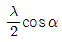
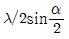
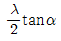
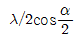
(정답률: 54%)
62. 레이저 광원에서 나온 두 개의 레이저 빔을 간섭시켜 사진필름에 기록하면 간섭무늬를 얻을 수 있다. 간섭무늬의 간격을 결정하는 주된 요소는 무엇인가?
- 필름의 굴절률
- 레이저의 파장
- 레이저의 스팟 크기
- 레이저의 결맞음 거리
(정답률: 38%)
63. 파장 500nm의 이상적인 레이저 광속을 그림과 같이 집속하였을 때, 발산각 θ가 1mrad이었다. 빔 허리(Beam waist)의 반지름 Wo는 약 얼마인가?
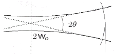
- 79.6㎛
- 122.0㎛
- 159.2㎛
- 3⑤.3㎛
(정답률: 40%)
64. 선폭이 △v=3×102Hz 인 레이저광의 가간섭시간(결맞음 시간)은?
- 3.3×10-6초
- 2.2×10-4초
- 3.3×10-3초
- 2.2×10-3초
(정답률: 65%)
65. 편광을 얻을 수 없는 것은?
- 복굴절을 이용하여 얻을 수 있다.
- 이색성 결정체에 의해 얻을 수 있다.
- 프리즘 막대를 통과시켜서 얻을 수 있다.
- 특별한 입사각(편광각)으로 입사시켜 반사된 빛에 의해 얻을 수 있다.
(정답률: 44%)
66. 편광자와 검광자의 편광 방향을 나란하게 겹쳐 놓고 햇빛에 비치면 밝게 보일 때 그 사이에 매우 얇은 Waxed paper를 끼우면 어둡게 변하는 이유는?
- Wax 분자에서 굴절효과 때문
- Waxed paper 때문에 빛이 간섭을 일으켜서
- Waxed paper 때문에 복굴절이 일어나기 때문에
- Waxed paper에 의해 산란된 빛이 편광되기 때문에
(정답률: 56%)
67. 전기방전으로 여기될 수 없는 레이저는?
- CO2 레이저
- 색중심 레이저
- Ar+ 레이저
- 구리 증기 레이저
(정답률: 42%)
68. 홀로그래피에 이용하는 Ar레이저에 에탈론(etalon)을 사용하는 이유는?
- 출력의 안정을 가하기 위하여
- 횡모드 특성을 좋게 하기 위하여
- 공간적 결맞음(spatial coherence)을 늘리기 위하여
- 시간적 결맞음(temporal coherence)을 늘리기 위하여
(정답률: 43%)
69. 레이저 다이오드의 20GHz/℃의 온도 의존도를 갖는다고 가정할 때, 주파수의 변화가 100MHz이하가 되게 하려면 허용 가능한 온도 변화는 얼마인가?
- 0.0⑤℃
- 0.25℃
- 0.025℃
- 0.5℃
(정답률: 67%)
70. 레이저를 이용한 홀로그래피는 레이저 빛의 어떤 성질을 이용한 것인가?
- 간섭성
- 고휘도성
- 직진성
- 고집속성
(정답률: 73%)
71. 어떤 결정체의 유전율 텐서(tensor)가 직각좌표계로 다음과 같이 표현된다. X 축 방향으로 편광된 빛이 Z축 방향으로 진행할 때 빛의 결정 내 진행속도가 2×108m/s이라면 Z축 방향으로 편광된 빛이 X축으로 진행하는 결정 내 속도는 얼마인가?
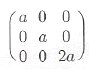
- 1×108m/sec
- √2×108m/sec
- 2×108m/sec
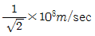
(정답률: 50%)
72. 광축과 45°방향으로 선형 – 편광된 빛이 λ/4판(quarter-wave plate)을 통과하여 나오는 편광 상태는?
- 타원 편광
- 45°선형 편광
- 원형 편광
- 90°선형 편광
(정답률: 71%)
73. 편광되지 않은 빛이 입사할 때 그림과 같이 대칭으로 진행하는 수직한 선편광으로 분리하는 프리즘의 명칭은?
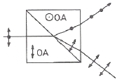
- Wollaston
- Rochon
- Sernamont
- Glan-Thompson
(정답률: 58%)
74. 전기장이 선형 편광자를 지난 후 E(z,t)=1.5 cos(ωt-kz)j가 된다. 45°로 y축에 대해 놓여 있는 또 다른 선형 편광자를 지날 때 빛의 세기는 첫 번쨰 편광자를 지난 후와 비교하면 얼마나 줄어드는가?
- 1/8
- 1/6
- 1/4
- 1/2
(정답률: 43%)
75. 전기장 E1=cos(ø1)+isin(ø1), E2=cos(ø2(V))+isin(ø2(V))일 때 두 전기장의 간섭 세기 표현식은?
- 2(1+sin(ø2(V)-ø1))
- 2(1+sin(ø2(V)+ø1))
- 2(1+cos(ø2(V)-ø1))
- 2(1+cos(ø2(V)+ø1))
(정답률: 53%)
76. 다음 중 굴절률 정합 방법이 아닌 것은?
- LiNbO3는 굴절률이 온도의 분산함수로 변하므로 적당한 온도에서
 가 될 수 있다.
가 될 수 있다. - 각각의 파장이 λ1, λ2인 광이 진행하여 λ3인 광이 방출되며 이들이 같은 방향으로 진행할 경우 λ1+λ2=λ3가 된다.
- KDP type I의 경우 결정축을 회전하여 적당한 전파방향과 이루는 각도 θm에 대해서
 가 되게 한다.
가 되게 한다. - 정상광선 축과 이상광선 축으로 각각 ω의 광을 입사시켜 이상광선 축에서 2ω의 광을 발생시키는 KDP type ∥의 경우
 로 한다.
로 한다.
(정답률: 67%)
77. 레이저 광의 일반적인 특성으로 틀린 것은?
- 진동수가 매우 일정한 광파이다.
- 스펙트럼 폭이 아주 작은 단색광이다.
- 레이저 광은 거의 퍼지지 않는 상태로 직진한다.
- 레이저 광은 간섭현상이 나타나지 않는 광파이다.
(정답률: 73%)
78. 단축 결정체(uniaxial crystal)에서 입사광의 전파방향이 광축과 몇 도 각도를 이룰 때 복굴절 현상이 보이지 않는가?
- 0°
- 30°
- 45°
- 60°
(정답률: 65%)
79. 광 리소그라피에서 초미세 형상의 노광에 가장 적합한 레이저는?
- He-Ne 레이저
- 구리 증기 레이저
- Nd:YAG 레이저
- ArF 엑시머 레이저
(정답률: 65%)
80. 파장 가변레이저라고 할 수 없는 것은?
- KrF 레이저
- 자유전자 레이저
- Dye 레이저
- Ti:Al2O3 레이저
(정답률: 53%)